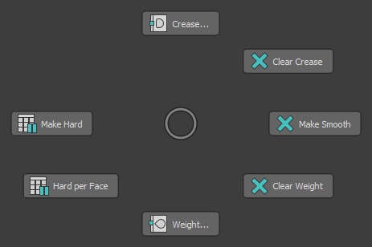
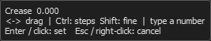

Tools / Edge Marks Pie
Edge Marks Pie
Crease, edge weight, hard and smooth edges, all from one pie on Shift+E.
What it does
The Edge Marks pie puts the edge marks you use most in one place: crease, edge weight, hard edges and smooth edges. It works on Editable Poly and Edit Poly (also an Edit Poly shared by several objects).

How to use it
- Go to edge, border or polygon level of an Editable Poly or Edit Poly. At other levels the key does nothing.
- Press Shift+E. A pie menu opens around the mouse. Hold the key, flick the mouse toward a button and let go to run it. You can also click a button. Esc, a right-click or a click in the centre closes the pie. If you let go of the key without moving, the pie stays open for a click.
- Pick a button. Make Hard, Make Smooth, Hard per Face, Clear Crease and Clear Weight act at once.
- Crease... and Weight... open a drag tool: move the mouse left or right to set the value, or type a number and press Enter. Click or Enter keeps it; right-click or Esc puts it back.

Options
| Button | Position | What it does |
|---|---|---|
| Crease... | Top | Drag tool to set the crease of the selected edges. |
| Clear Crease | Top right | Sets the crease back to 0. |
| Make Smooth | Right | Makes the edges smooth: the faces on both sides share a smoothing group. |
| Clear Weight | Bottom right | Sets the edge weight back to 1. |
| Weight... | Bottom | Drag tool to set the edge weight. |
| Hard per Face | Bottom left | Polygon level: gives each selected polygon its own smoothing group, so all its edges are hard. |
| Make Hard | Left | Makes the edges hard: smoothing groups are split across them. |
In the drag tools, Ctrl moves in steps and Shift moves in fine steps.
Good to know
- At polygon level the marks go on the border of the selected polygons.
- While a drag tool is open, Max's keyboard shortcuts are off, so the number keys type into the value instead of changing sub-object level.
- Max's own hard-edge display can be toggled from the Modes pie.
- Marks work on large selections quickly.